Filtres des écrans MCO
Liste des filtres présents dans les écrans MCO
Introduction
Présentation des filtres communs à la plupart des écrans MCO.
Chaque filtre est décrit par :
- son type
- son fonctionnement par rapport aux tableaux ou graphiques dans les écrans MCO (RUM, séjours, actes CCAM, codes CIM)
- diverses remarques
Pour des raisons d’affichage, certains filtres sont accessibles dans un méta-filtre.
Exemple : tous les filtres de classification GHM dans le méta-filtre “Classification séjour”
Les filtres MCO spécifiques à un écran sont décrits dans la documentation de l’écran concerné.
Filtre “Année”
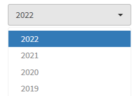
Type de filtre : liste.
Valeurs : 2019 à 2023
Tableau de RUM : sélection des RUM avec la date de sortie de l’UM du RUM dans l’année sélectionnée
Tableau de séjours : sélection des séjours avec la date de sortie du séjour (= la date de sortie du dernier RUM du séjour) dans l’année sélectionnée
Tableau d’actes CCAM ou de codes CIM : sélection des actes CCAM ou codes CIM des RUM avec la date de sortie de l’UM du RUM dans l’année sélectionnée
Filtre présent dans tous les écrans en 1ere position de la 1ere ligne de filtres.
Filtre “Mois”
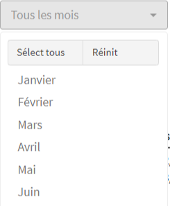
Type de filtre : liste.
Valeurs : les 12 mois
Tableau de RUM : sélection des RUM avec la date de sortie de l’UM du RUM comprise dans un mois sélectionné
Tableau de séjours : sélection des séjours avec la de date de sortie du séjour (= la date de sortie du dernier RUM du séjour) comprise dans un mois sélectionné
Tableau d’actes CCAM ou de codes CIM : sélection des actes CCAM ou codes CIM des RUM avec la date de sortie de l’UM du RUM comprise dans un mois sélectionné
Filtre présent dans tous les écrans en 2eme position de la 1ere ligne de filtres.
Filtre “UM”
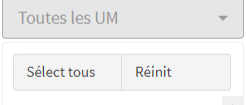
Type de filtre : liste.
Valeurs : codes des UM représentées par au moins 1 RUM dans les imports PMSI de l’établissement.
Tableau de RUM : sélection des RUM avec une UM sélectionnée
Tableau de séjours : sélection des séjours avec au moins 1 RUM relevant d’une UM sélectionnée
Tableau d’actes CCAM ou de codes CIM : sélection des actes CCAM ou codes CIM des RUM relevant d’une UM sélectionnée
Filtre présent dans tous les écrans en 3eme position de la 1ere ligne de filtres.
Filtre “Autorisation”
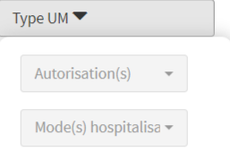
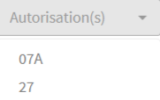
Type de filtre : liste.
Valeurs : codes des autorisations représentées au moins 1 fois dans les fichiers FICIUM de l’établissement.
Filtre actif si FICIUM de l’année sélectionnée est importé.
Tableau de RUM : sélection des RUM relevant d’une UM avec une autorisation sélectionnée
Tableau de séjours : sélection des séjours avec au moins 1 RUM dont l’UM est avec une autorisation sélectionnée
Tableau d’actes CCAM ou de codes CIM : sélection des actes CCAM ou codes CIM des RUM dont l’UM est avec une autorisation sélectionnée
Filtre affiché dans le méta-filtre “Type d’UM”
Filtre “Mode d’hospitalisation”
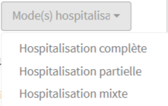
Type de filtre : liste.
Valeurs : les modes d’hospitalisation possibles en MCO.
Filtre actif si FICIUM de l’année sélectionnée est importé.
Tableau de RUM : sélection des RUM dans une UM avec un mode d’hospitalisation sélectionné
Tableau de séjours : sélection des séjours avec au moins 1 RUM dont l’UM a un mode d’hospitalisation sélectionné
Tableau d’actes CCAM ou de codes CIM : sélection des actes CCAM ou codes CIM des RUM dont l’UM a un mode d’hospitalisation sélectionné.
Filtre affiché dans le méta-filtre “Type d’UM”
Filtre “NAS”
Type de filtre : code.
Valeurs : saisie libre
Tableau de RUM : sélection des RUM avec le NAS saisi
Tableau de séjours : sélection des séjours avec le NAS saisi
Tableau d’actes CCAM ou de codes CIM : sélection des actes CCAM ou codes CIM des RUM avec le NAS saisi
Filtre “CMD”
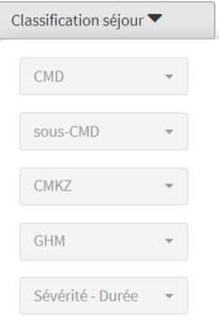
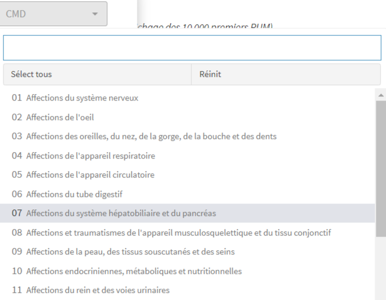
Type de filtre : liste.
Valeurs : codes + libellés CMD des CMD représentées par au moins 1 RUM dans les imports PMSI de l’établissement.
Tableau de RUM : sélection des RUM classés dans une CMD sélectionnée
Tableau de séjours : sélection des séjours classés dans une CMD sélectionnée
Tableau d’actes CCAM ou de codes CIM : sélection des actes CCAM ou codes CIM des RUM classés dans une CMD sélectionnée
Filtre affiché dans le méta-filtre “Classification séjour”
Filtre “Sous_CMD”
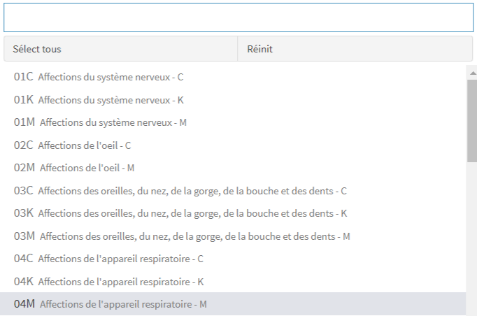
Type de filtre : liste.
Valeurs : codes + libellés des sous-CMD représentées par au moins 1 RUM dans les imports PMSI de l’établissement
Tableau de RUM : sélection des RUM classés dans une sous-CMD sélectionnée
Tableau de séjours : sélection des séjours classés dans une sous-CMD sélectionnée
Tableau d’actes CCAM ou de codes CIM : sélection des actes CCAM ou codes CIM des RUM classés dans une sous-CMD sélectionnée
Filtre affiché dans le méta-filtre “Classification séjour”
Filtre “CMKZ”
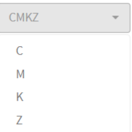
Type de filtre : liste.
Valeurs : C, M, K, Z
Tableau de RUM : sélection des RUM classés avec un des codes (C,M,K,Z) sélectionné
Tableau de séjours : sélection des séjours classés avec un des codes (C,M,K,Z) sélectionné
Tableau d’actes CCAM ou de codes CIM : sélection des actes CCAM ou codes CIM des RUM classés avec un des codes (C,M,K,Z) sélectionné
Filtre affiché dans le méta-filtre “Classification séjour”
Filtre “GHM”
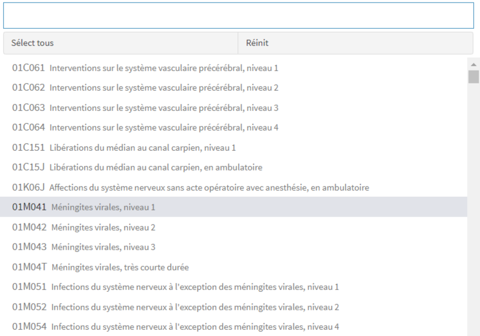
Type de filtre : liste.
Valeurs : codes + libellés des GHM représentés par au moins 1 RUM dans les imports PMSI de l’établissement
Tableau de RUM : sélection des RUM classés dans un GHM sélectionné
Tableau de séjours : sélection des séjours classés dans un GHM sélectionné
Tableau d’actes CCAM ou de codes CIM : sélection des actes CCAM ou codes CIM des RUM classés dans un GHM sélectionné
Filtre affiché dans le méta-filtre “Classification séjour”
Filtre “Sévérité-Durée”

Type de filtre : liste.
Valeurs : 1, 2, 3, 4, J, T, Z, E, A, B, C, D
Tableau de RUM : sélection des RUM classés avec un code de sévérité/durée sélectionné
Tableau de séjours : sélection des séjours classés avec un code de sévérité/durée sélectionné
Tableau d’actes CCAM ou de codes CIM : sélection des actes CCAM ou codes CIM des RUM classés avec un code de sévérité/durée sélectionné
Filtre affiché dans le méta-filtre “Classification séjour”
Filtre “Nombre RUM par séjour”

Type de filtre : intervalle.
Valeurs : saisie numérique
Tableau de RUM : sélection des RUM des séjours avec un nombre de RUM dans l’intervalle numérique sélectionné
Tableau de séjours : sélection des séjours avec un nombre de RUM dans l’intervalle numérique sélectionné
Tableau d’actes CCAM ou de codes CIM : sélection des actes CCAM ou codes CIM des RUM des séjours avec un nombre de RUM dans l’intervalle numérique sélectionné
Filtre affiché dans le méta-filtre “Type de RUM”